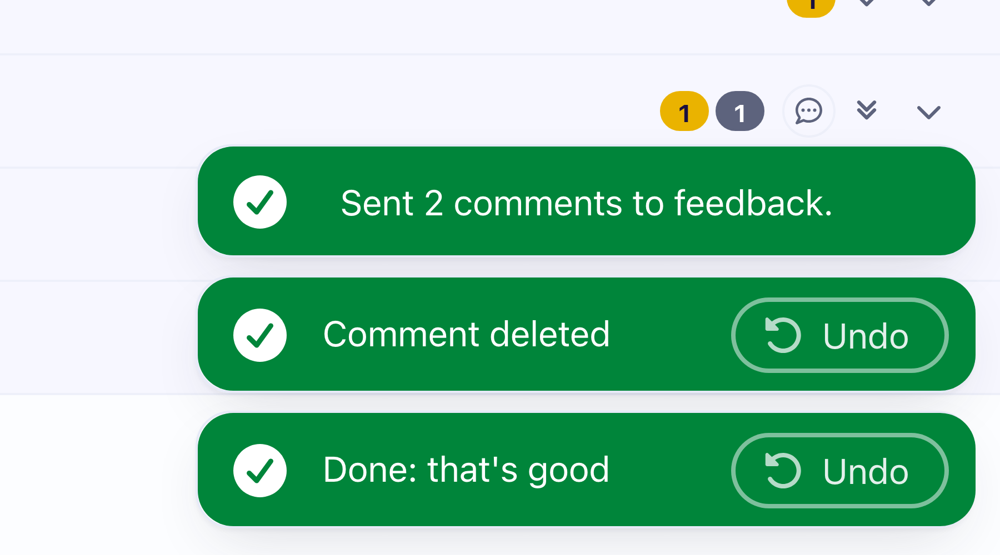

<!-- plan-doc part:  #v53's details in epic-engine.plan.html, loaded when it opens (templates/epics/plan-doc.md, "Parts") -->
<epic-field label="Step">On a guide, add a comment, then delete it with its trash</epic-field
><epic-field label="Should"
  >The toast is one green line like the others, Undo at its right end on the same green</epic-field
><epic-field label="Example"></epic-field
><epic-field label="If not">say what still looks off</epic-field>
